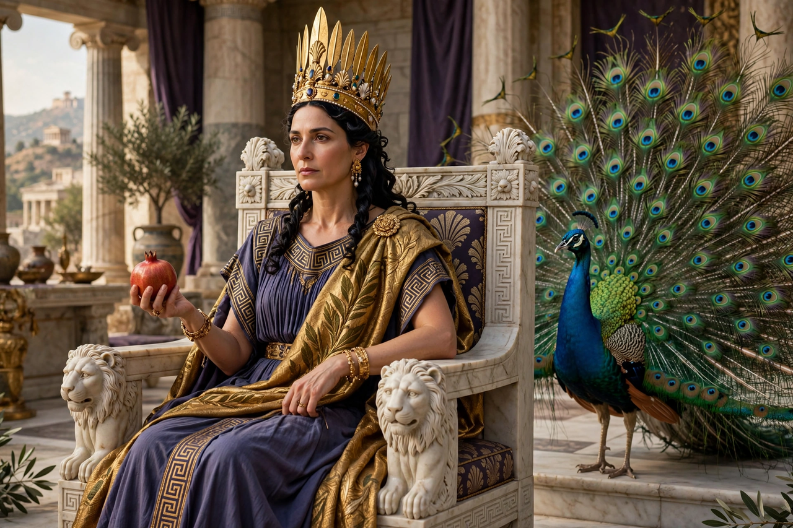

From Wikipedia, the free encyclopedia
| Hera | |
|---|---|
| Affiliation | Greek mythology; queen of the gods, goddess of marriage and childbirth |
| Parents | Cronus and Rhea |
| Spouse | Zeus |
| Children | Ares, Hephaestus, Hebe, Eileithyia |
| Symbols | Peacock, cow, pomegranate, diadem |
| Sacred sites | Argos, Samos, Olympia |

Hera is the Greek goddess of marriage, women and childbirth, queen of Olympus as wife and sister of Zeus, and daughter of Cronus and Rhea. Guardian of lawful wedlock and its obligations, she is in the myths both the majesty of heaven — Homer calls her "ox-eyed" and white-armed — and the great antagonist of Zeus's lovers and their children, above all Heracles, whose very name ("glory of Hera") binds him to the goddess who persecuted him. Her cult, at Argos, Samos and Olympia, is among the oldest in Greece.
Hera's marriage is the myths' stormiest: Zeus's courtship (he came to her, in one tale, as a bedraggled cuckoo she pitied and held to her breast), their wedding — celebrated in local ritual as the hieros gamos, the sacred marriage — and their endless quarrels drive many stories. Her jealousy falls on Io, Semele, Leto, Callisto and Alcmene, and on Heracles most of all: she sent the snakes to his cradle, drove him mad to kill his family, and set his labours in motion through Eurystheus. Yet she is also the helper of Jason and the Argonauts, the implacable enemy of Troy in the Iliad (trading cities for Paris's judgement against her), and the power whose borrowed girdle of Aphrodite lets her distract Zeus to aid the Greeks.
The Heraion of Samos and the Argive Heraion were panhellenic sanctuaries of great antiquity; at Olympia her temple, older than Zeus's, housed the famous Hermes of Praxiteles, and the Heraean Games — footraces for women — were held in her honour. Her peacock, its tail starred with the eyes of her servant Argus, and the cow are her animals; the pomegranate, emblem of fertility and of death, is her fruit. Roman Juno, identified with her, became protector of the Roman state and of women in marriage.
Greek mythology · Zeus · Heracles · Athena · Persephone